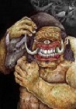
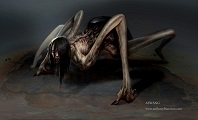
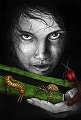
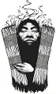

The Creation of Philippine Mythology
The Creation of Philippine Mythology
TIKBALANG: The Horse Demon
In the Philippine forest is said to lurk a creature, part man, part horse known for its speed and mischievous nature. Some say it is a mythical spirit that guards the gateway to the Skyworld. Others believe it is a demon who is determined to cause trouble for those who cross its path. The episode takes us back in time to the pre-Spanish Philippines where we learn about their animist beliefs. It traces the image of the Tikbalang back 4000 years to Hinduism and explains how that influence evolved into the mysterious half horse creature we know today.
Bungisngis
Bungisngis is a one-eyed giant. This Philippine folklore giant lives in forest and woods. It is a happy and a playful cyclops. It is also commonly known as 'Mahentoy' in the northern part of Davao.
Aswang
Aswangs are shapeshifters. They are human-like by day but transform into different monstrous forms to harass and eat awake humans at night or day, especially pregnant women who are about to give birth.[1] Aswangs can change from a human to an animal form, usually as a big black bird with a long tongue (tiktik), as a half-bodied monster (manananggal) as a bat, a cat, a pig or a black dog. Some aswangs can change form at will, others through the use of foul oils concocted by good magicians (albularyo,manggagaway,manghihilot). Aswangs appear at night (rarely during the day) to prey upon unwary travelers or sleeping people. It is said that they have a peculiar liking for the taste of human liver. The myth of the Aswang is popular in the Visayas, especially in provinces such as Aklan, Capiz, Antique, and Ilo-Ilo. Aswangs (mostly, tiktiks) also have a peculiar liking for the fetus of pregnant women and are said to find their quarry by the scent of the mother, which to the aswang smells like ripe jackfruit.
Mambabarang
Mambabarang (summoner) is a witch who uses insects and spirits to enter the body of any person they hate. A Mambabarang is a kind of a mangkukulam. Mambabarangs are ordinary human beings with black magic who torture and later kill their victims by infesting their bodies with insects. They are different from Mangkukulams - the latter only inflict pain or illness. Mambabarangs use a strand of hair from their chosen victim and tie it to the bugs or worms which they will use as a medium. When they prick the bug, the victim immediately experiences the intended effect.
Pasatsat
Pasatsat is word rooted on the Pangasinense word satsat, meaning "to stab". Pasatsats are ghosts of people who died or were killed in the Second World War. Coffins during the time were so expensive, so the families of the dead wrapped the corpses in reed mats or icamen. These ghosts usually show up in solitary paths and block passersby. To get rid of such a ghost, one needs to stab (hence pasatsat) the reed mat and unravel it, but doing so will show no presence of a corpse, although the mat will emit a noxious odor, much like that of putrid flesh.